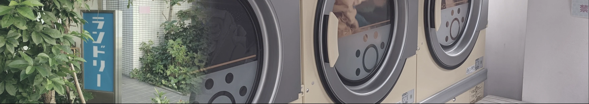

まちの写真や記憶を、短い戯曲と朗読にして共有するプロジェクト
A project sharing short plays and audio readings created from local photographs and memories.

シアター
Theater
10/31（土）〜
京都市内のいくつかのコインランドリーで、その周辺のまちの写真や記憶をもとにつくった戯曲や朗読を、洗濯や乾燥を待ちながら楽しめます。
まだ知らない誰かの経験を通して、いつものまちを違う視点から想像してみませんか。
At laundries across Kyoto, read short plays and listen to recordings based on local photographs and memories while you wait.
Imagine familiar places through someone else's experience.
店舗を選ぶ
店内の机にある案内のQRコードを読み取り、その店舗の作品サイトを開く。
Scan the QR code on the table to open the site for that laundry.
地図や写真から気になる場所を選び、戯曲を読んだり、朗読を聴く。
Choose a place on the map to read a play or listen to a recording.
周辺のまちの写真や記憶、ふと感じたことを投稿する。
投稿はワークショップで戯曲化し、サイトで共有します。
Contributions become plays in workshops and are shared online.
戯曲は、演劇の上演のために書かれた脚本です。ここでは、短いエッセイや詩的な表現も含め、読む・聴くだけでも楽しめる作品を指します。
Plays are scripts written for theatrical performance. Here, the term also includes short essays and poetic writing: works to enjoy simply by reading or listening.
音声は、周りの方の迷惑にならない音量や、イヤホン等でお楽しみください。
Please keep the volume low enough not to disturb others.
戯曲をつくる
ワークショップ
Playwriting workshop
シアターに投稿された写真や記憶、物語を手がかりに、短い戯曲を一緒につくり、朗読します。
Create and read a short play using photographs, memories and stories posted to the Theater.
2026
Nov 21 (Sat) & Dec 6 (Sun), 2026
各日 13:00–17:00
@KYOTO LAUNDRY CAFE
- 参加費
- カフェでワンドリンクのご注文Please order one drink at the café.
- 使用言語
- 日本語Conducted in Japanese.
3〜4人程度のグループをつくります。
Form groups of around 3–4 people.
シアターに投稿された情報を手がかりに戯曲をつくります。
Use contributions to the Theater to create a short play.
完成した戯曲を全体で朗読します。
Read the completed plays aloud together.
完成した作品と朗読音声は、場所の位置情報や写真とともに、シアターのサイトへ掲載します。